Maytag Connected Laundry App Redesign, the design process
Project brief: create an interim version of the Maytag app for connected appliances that feels straightforward, powerful, and uniquely Maytag — an experience that extends the user's appliance and unlocks the full spectrum of power (knowledge, remote control, speed, performance) in their daily routine.
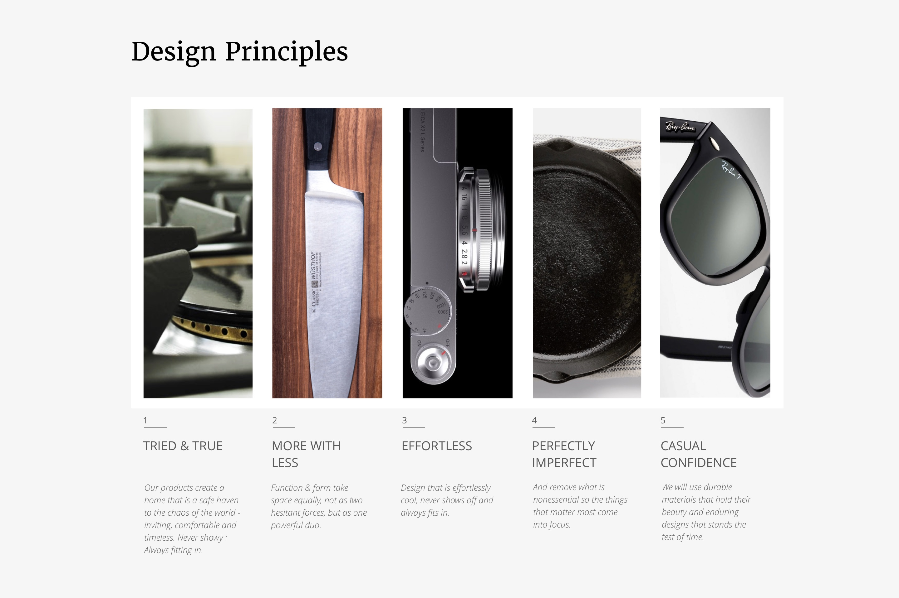
Landing on a style that honors the brand principles
The Maytag app centers on connected laundry — letting users operate their washer and dryer remotely, set and schedule wash and dry cycles, monitor time remaining, and get notified on status. It helps users pick the right cycle for the stains or load they're dealing with, and the redesign was built flexible enough to accommodate Maytag's move into connected kitchen appliances down the line.
Maytag is an American home and commercial appliance brand under the Whirlpool Corporation, with about 80% of its business in laundry — so the redesign focused there. Maytag stands for dependable, powerful, and intentional, and bringing that through clearly was the priority. This was Maytag's fifth app release (1.5), and deliberately did not chase new features — the focus was the "how," not the "what": a complete UI makeover through cleaner UX, not new functionality unless absolutely necessary.
Goals for the redesign
Aesthetic overhaul — tie brand principles to UI design for an elevated brand experience.
Focus on the "how," not the "what" — deliver existing features in a redefined, straightforward, powerful way rather than introducing new ones.
Tried & true methodology — Maytag users want the job done and trust familiar patterns; not every wheel needed reinventing.
An app that feels like an extension of the appliance — design details inspired by the hardware itself.
Strategic differentiation — distinct from sibling Whirlpool brands like KitchenAid and Jenn‑Air.
Appeal to Gen X & millennials — move past Maytag's reputation as a brand only older generations use.
Set the stage for future redesigns — lay groundwork for a later release that tackles new features.
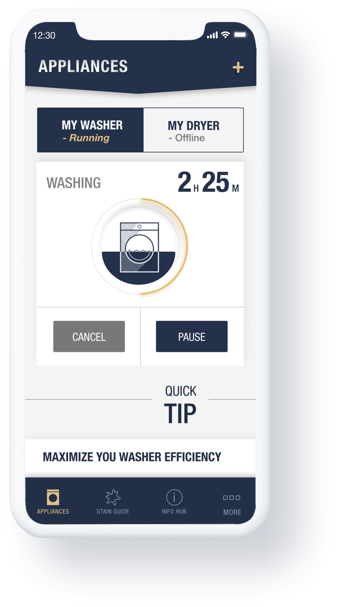
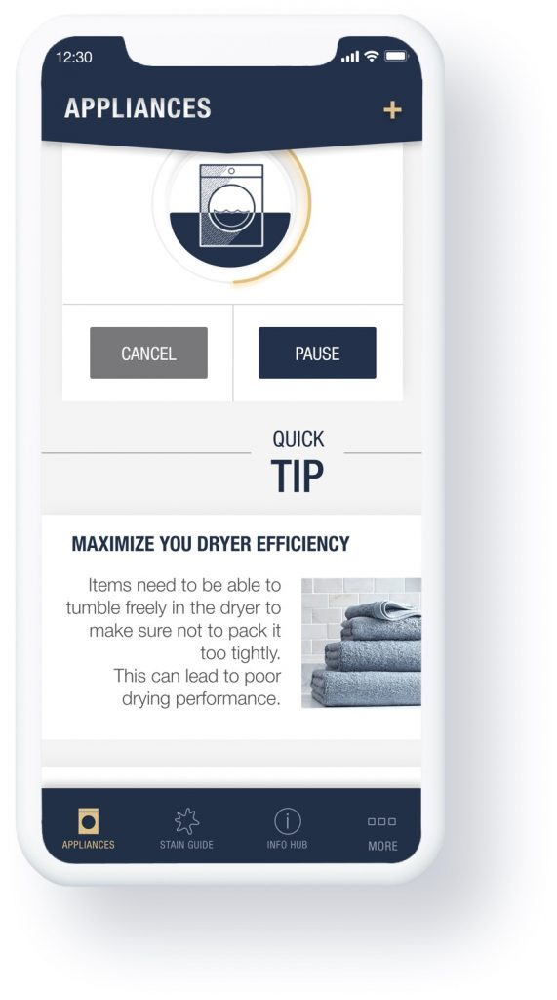
Elevating the brand position
Maytag has long carried a reputation for being a bit boring — a brand skewing older, whose customers might not be the most tech-forward. Research from the brand and marketing teams proved the opposite: Maytag owners are Gen X and millennials who use smartphones and welcome remote control of their appliances — they just don't want technology for its own sake. They want it purposeful. The redesign leaned into appealing to that audience with intention, not novelty.
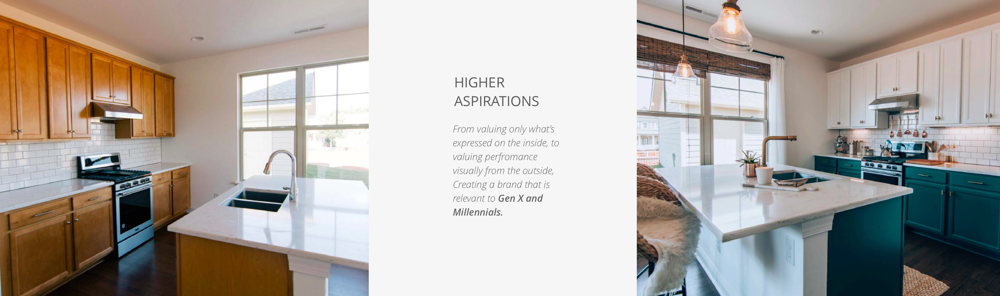
Existing app 1.0
Maytag was one of four major Whirlpool Corp brands, and the first connected-laundry app was actually designed for Whirlpool itself — a gold/yellow version of the same screens. Once built, the colors were simply swapped to Maytag's brand palette and shipped. The result lacked character and wasn't uniquely identifiable as Maytag, even though the brand's pillars — powerful, dependable, intentional — didn't come through at all. That mismatch is what kicked off the conversation for a real redesign.
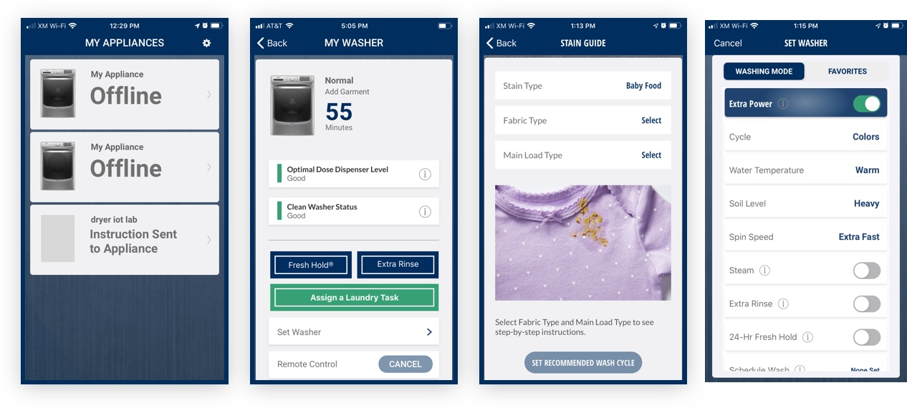
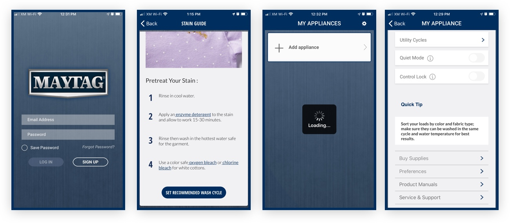
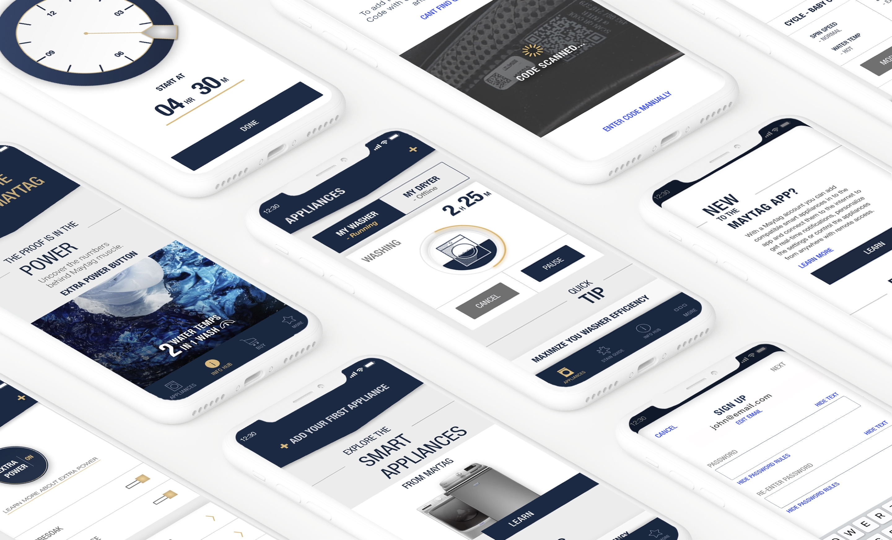
Workshop, kickstarting the redesign
The project began with a workshop bringing together Maytag brand and marketing, IoT, industrial design, and digital UI/UX — all aligning on what Maytag means from every angle, and reviewing the marketing research behind the brand pillars: dependable, powerful, intentional. With Whirlpool, Jenn‑Air, KitchenAid and Maytag all under one roof, understanding what set each brand apart was critical to landing on something uniquely Maytag.
The company uses a brand-quadrant structure with a distinct archetype per brand: Whirlpool is care, Jenn‑Air is shine, KitchenAid is craft, and Maytag is peace — as in peace of mind. Translating that idea into design decisions became the throughline for the whole project.
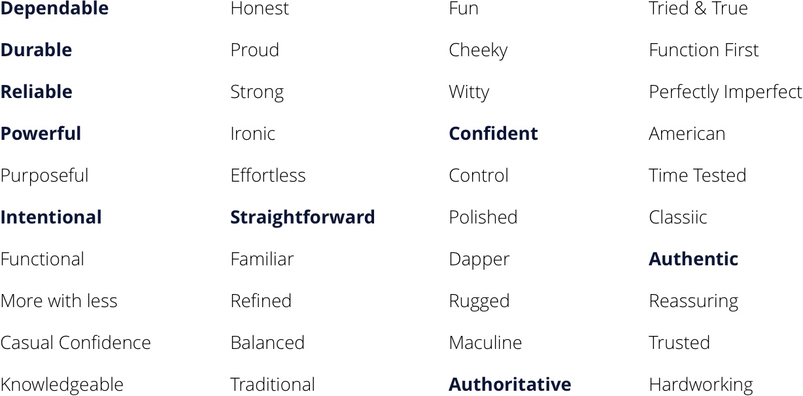
Defining the target audience — the trust keepers
Trust keepers like things simple, lead a relaxed lifestyle, and still want to feel in control. They find comfort in a schedule, value performance, reliability, and durability over chasing trends. "Peace of mind" meant removing fluff and getting straight to the point — giving users only what they need, through simple, tried-and-true patterns, so the app feels like a genuine helping hand.
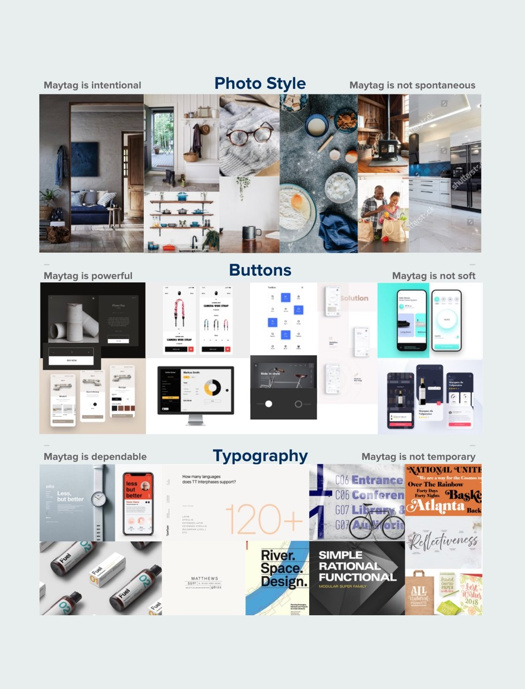
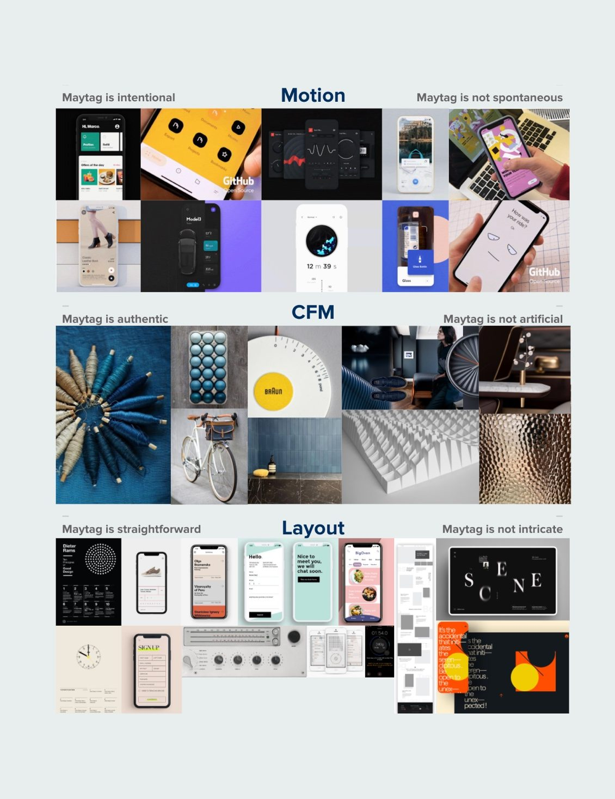
The design process
After the workshop, the team built an inspiration board used as a reference throughout — including in areas of product design beyond just the app. From there, the process centered on designing one wireframe — the home/appliance-status screen — and exploring many UI directions on top of it, so every option compared apples to apples. Home was chosen because it carries the most information and hierarchy, making it the clearest test of the right direction.
Research included interviews with the public and with people inside the organization about laundry and Maytag — a topic everyone had opinions on.
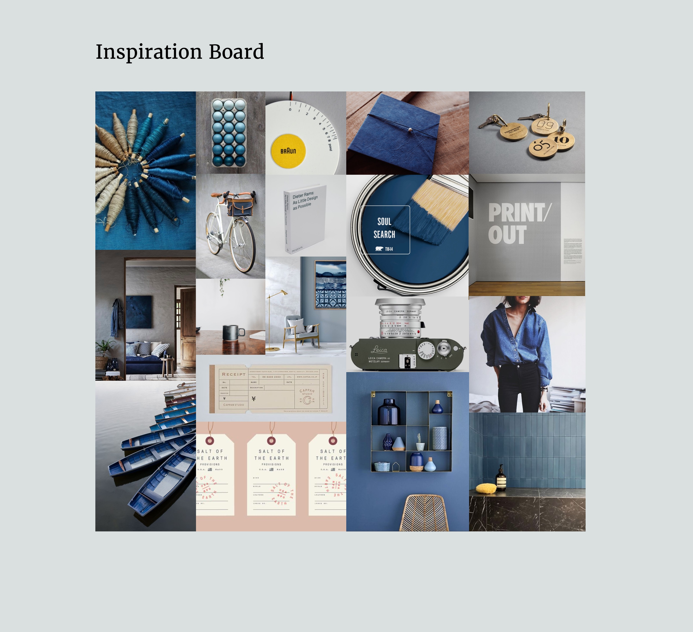
Research takeaways that shaped the key decisions
People strongly associated the brand with powerful, reliable, and intentional — words that came up unprompted and went on to define the brand pillars further.
90% of people don't like doing laundry — a key driver behind every design decision that followed.
Get to the point — simple, purposeful design that gives users only what they want, without adding friction.
People were genuinely excited about a better laundry app — especially seeing cycle status remotely, getting notified when done, and scheduling cycles ahead so laundry's ready when they're home.
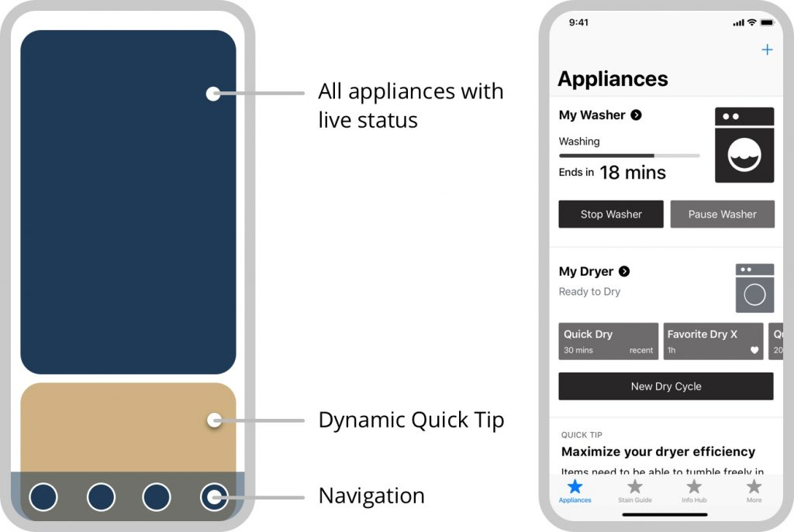
Explorations
Explorations started from a single wireframe — the Home/Appliance Status screen — after research made clear that the very first thing users want on opening the app is their appliance's status. Since people tend to run the same cycle repeatedly, surfacing dynamic cycle favorites and per-appliance history early turned out to add real value.
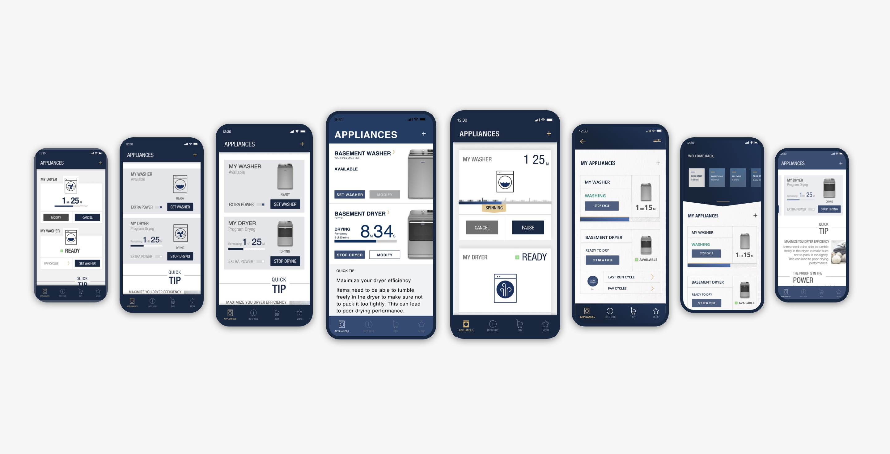
Multiple explorations were reviewed with the broader team, and the strongest elements from each were carried into the final direction: big bold text felt powerful and reliable; icons (rather than actual appliance photos) let visually similar washer/dryer models read as distinct; rectangular, filled, bold buttons felt more dependable than rounded or outlined ones; a big, bold countdown timer added real value. The core challenge was keeping the home screen simple without making it feel cold or flat — finding that balance was the work.
The final direction won because it was simple — every element had a clear place and purpose, surfaced the most relevant information first, felt modern and clean, and used motion design to stay interesting. Small graphical details, inspired by Maytag's own appliances, reinforced the idea that the app is an extension of the hardware itself.
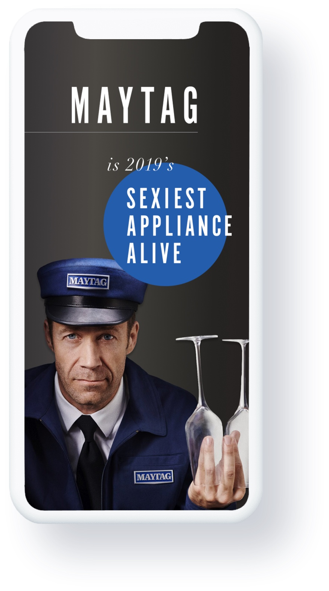
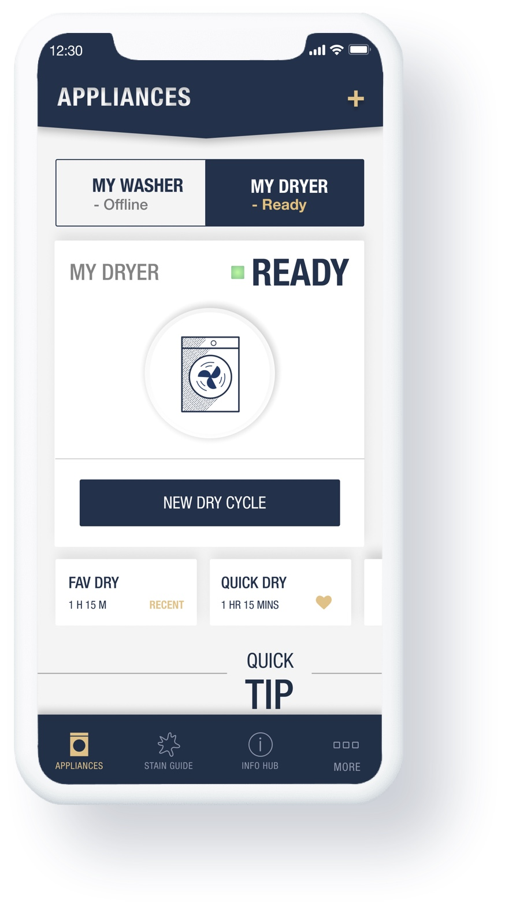
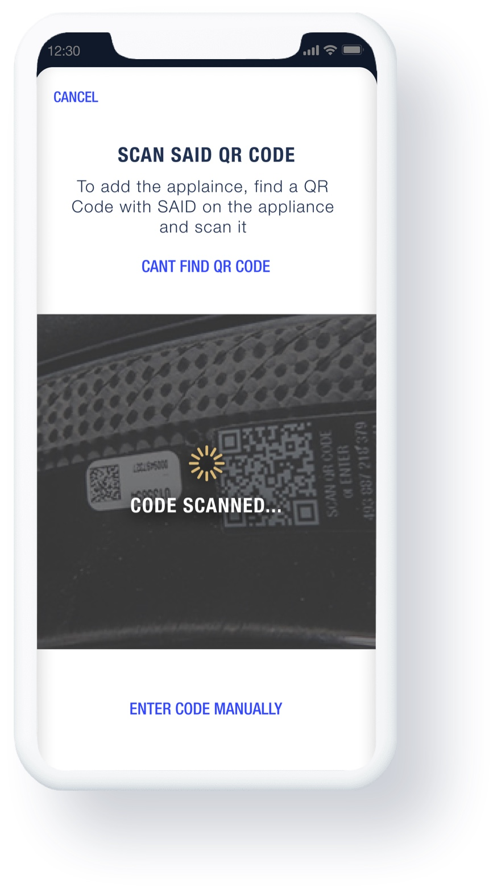
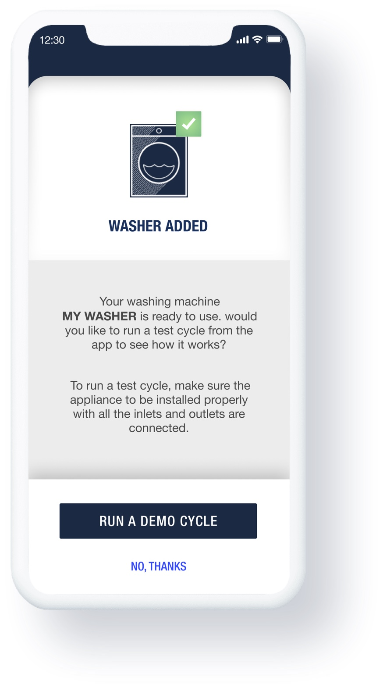
Challenges
Deciding between real product photography and icons for washers/dryers — solved with intentional icon design, since matching-set appliances can look nearly identical.
The home screen doubling as the appliance-status screen — keeping it simple and to-the-point while still making it feel interesting, largely solved through purposeful motion design.
Designing for future flexibility, since connected ovens and microwaves were likely to follow washers and dryers.
Planning for translation into French and Spanish, where text runs roughly 30–40% longer than English — a constraint baked into every component and the design system.
Deciding what earns visual weight — as the saying goes, when everything is bold, nothing is bold.
Bringing stakeholders on board with new accent colors and a new direction through presentations, printouts, and working prototypes on real devices.
Once the direction was approved, building out repeatable patterns across the full app through a design system — itself an ongoing process.
Flexibility in design
The direction had to flex with each user's real situation — the appliance tab, for instance, adapts across four states: no connected appliance, one, two, or three-plus connected appliances.
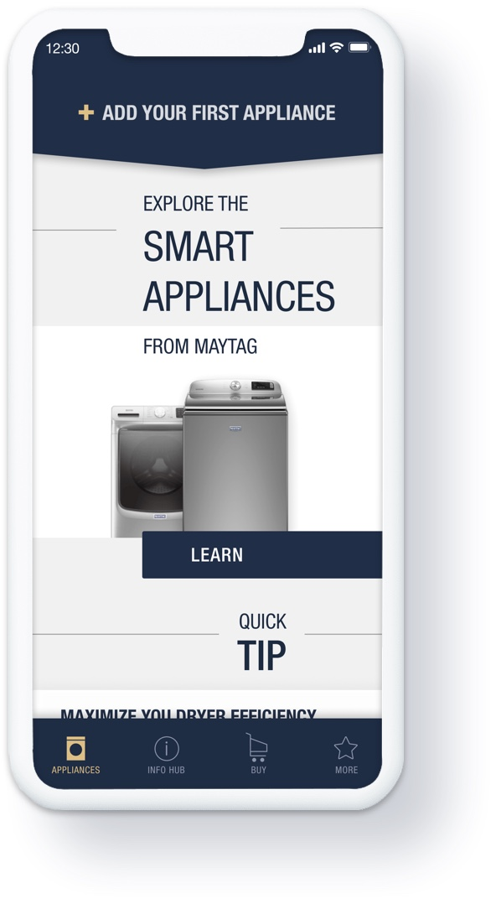
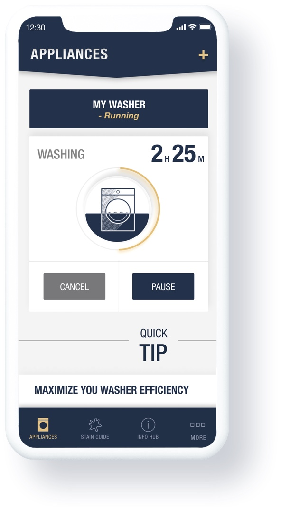
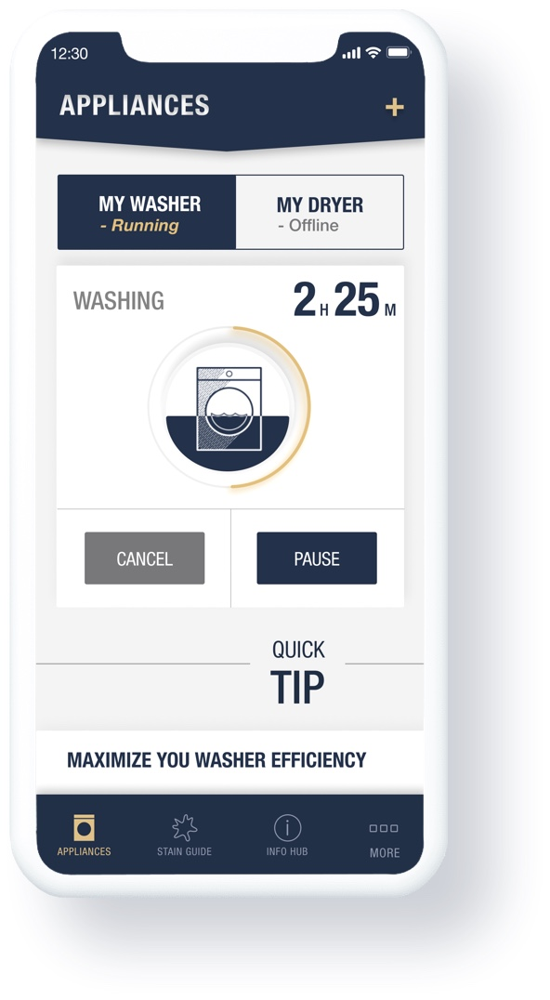
Conclusion / learnings
The biggest takeaway was the value of strong presentation technique in bringing stakeholders along at every step, and how efficient a redesign can be when broken into achievable goals pursued with focus. Deliberately targeting the "how" over the "what" meant shipping a better app sooner, ahead of upcoming connected-product launches — and it underscored how much research shapes real understanding of what users need.
Understanding how these appliances actually connect — over WiFi or BLE — and the complexity that comes with it was invaluable in designing the app itself. This project is still under development, and being part of it has been a genuinely rewarding learning experience.